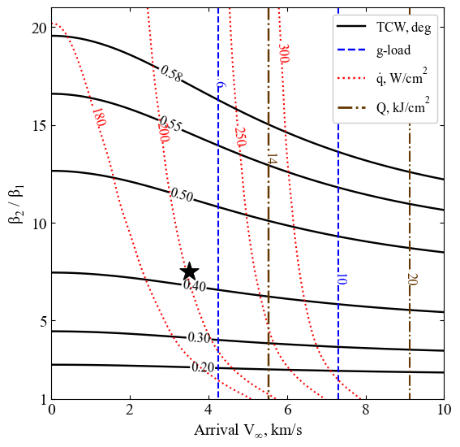

Section 4.2 - Venus SmallSat Aerocapture - Tradespace Exploration¶
We use aerocapture feasibility charts to explore the design trade space for aerocapture at Venus using drag modulation aerocapture.
[1]:
from AMAT.planet import Planet
from AMAT.vehicle import Vehicle
import numpy as np
from scipy import interpolate
import matplotlib.pyplot as plt
from matplotlib import rcParams
from matplotlib.patches import Polygon
import os
[2]:
# Create a planet object
planet=Planet("VENUS")
planet.h_skip = 150000.0
# Load an nominal atmospheric profile with height, temp, pressure, density data
planet.loadAtmosphereModel('../../../atmdata/Venus/venus-gram-avg.dat', 0 , 1 ,2, 3)
vinf_kms_array = np.linspace( 0.0, 10.0, 11)
betaRatio_array = np.linspace( 1.0, 21.0 , 11)
[3]:
beta1 = 20.0
runID = 'venus-smallsat-dm'
[4]:
v0_kms_array = np.zeros(len(vinf_kms_array))
v0_kms_array[:] = np.sqrt(1.0*(vinf_kms_array[:]*1E3)**2.0 + 2*np.ones(len(vinf_kms_array))*planet.GM/(planet.RP+150.0*1.0E3))/1.0E3
overShootLimit_array = np.zeros((len(v0_kms_array),len(betaRatio_array)))
underShootLimit_array = np.zeros((len(v0_kms_array),len(betaRatio_array)))
exitflag_os_array = np.zeros((len(v0_kms_array),len(betaRatio_array)))
exitflag_us_array = np.zeros((len(v0_kms_array),len(betaRatio_array)))
TCW_array = np.zeros((len(v0_kms_array),len(betaRatio_array)))
[5]:
for i in range(0,len(v0_kms_array)):
for j in range(0,len(betaRatio_array)):
vehicle=Vehicle('DMVehicle', 100.0, beta1, 0.0, 1.767, 0.0, 0.35, planet)
vehicle.setInitialState(150.0,0.0,0.0,v0_kms_array[i],0.0,-4.5,0.0,0.0)
vehicle.setSolverParams(1E-6)
vehicle.setDragModulationVehicleParams(beta1,betaRatio_array[j])
underShootLimit_array[i,j], exitflag_us_array[i,j] = vehicle.findUnderShootLimitD(2400.0, 2.0, -80.0,-4.0,1E-10, 400.0)
overShootLimit_array[i,j] , exitflag_os_array[i,j] = vehicle.findOverShootLimitD (2400.0, 2.0, -80.0,-4.0,1E-10, 400.0)
TCW_array[i,j] = overShootLimit_array[i,j] - underShootLimit_array[i,j]
print('VINF: '+str(vinf_kms_array[i])+' km/s, BETA RATIO: '+str(betaRatio_array[j])+' TCW: '+str(TCW_array[i,j])+' deg.')
np.savetxt('../../../data/acta-astronautica/smallsat-mission-concepts/venus/'+runID+'vinf_kms_array.txt',vinf_kms_array)
np.savetxt('../../../data/acta-astronautica/smallsat-mission-concepts/venus/'+runID+'v0_kms_array.txt',v0_kms_array)
np.savetxt('../../../data/acta-astronautica/smallsat-mission-concepts/venus/'+runID+'betaRatio_array.txt',betaRatio_array)
np.savetxt('../../../data/acta-astronautica/smallsat-mission-concepts/venus/'+runID+'overShootLimit_array.txt',overShootLimit_array)
np.savetxt('../../../data/acta-astronautica/smallsat-mission-concepts/venus/'+runID+'exitflag_os_array.txt',exitflag_os_array)
np.savetxt('../../../data/acta-astronautica/smallsat-mission-concepts/venus/'+runID+'underShootLimit_array.txt',underShootLimit_array)
np.savetxt('../../../data/acta-astronautica/smallsat-mission-concepts/venus/'+runID+'exitflag_us_array.txt',exitflag_us_array)
np.savetxt('../../../data/acta-astronautica/smallsat-mission-concepts/venus/'+runID+'TCW_array.txt',TCW_array)
VINF: 0.0 km/s, BETA RATIO: 1.0 TCW: 0.0 deg.
VINF: 0.0 km/s, BETA RATIO: 3.0 TCW: 0.22008299338631332 deg.
VINF: 0.0 km/s, BETA RATIO: 5.0 TCW: 0.3220487156722811 deg.
VINF: 0.0 km/s, BETA RATIO: 7.0 TCW: 0.38787807517292094 deg.
VINF: 0.0 km/s, BETA RATIO: 9.0 TCW: 0.4360231767168443 deg.
VINF: 0.0 km/s, BETA RATIO: 11.0 TCW: 0.4738638612579962 deg.
VINF: 0.0 km/s, BETA RATIO: 13.0 TCW: 0.5050491497822804 deg.
VINF: 0.0 km/s, BETA RATIO: 15.0 TCW: 0.5315089544747025 deg.
VINF: 0.0 km/s, BETA RATIO: 17.0 TCW: 0.5544410763759515 deg.
VINF: 0.0 km/s, BETA RATIO: 19.0 TCW: 0.5747357478830963 deg.
VINF: 0.0 km/s, BETA RATIO: 21.0 TCW: 0.5929213868803345 deg.
VINF: 1.0 km/s, BETA RATIO: 1.0 TCW: 0.0 deg.
VINF: 1.0 km/s, BETA RATIO: 3.0 TCW: 0.22123349050889374 deg.
VINF: 1.0 km/s, BETA RATIO: 5.0 TCW: 0.3235909743088996 deg.
VINF: 1.0 km/s, BETA RATIO: 7.0 TCW: 0.3896626835994539 deg.
VINF: 1.0 km/s, BETA RATIO: 9.0 TCW: 0.4379480112984311 deg.
VINF: 1.0 km/s, BETA RATIO: 11.0 TCW: 0.47592598646951956 deg.
VINF: 1.0 km/s, BETA RATIO: 13.0 TCW: 0.5072144496916735 deg.
VINF: 1.0 km/s, BETA RATIO: 15.0 TCW: 0.533770236565033 deg.
VINF: 1.0 km/s, BETA RATIO: 17.0 TCW: 0.5568076887211646 deg.
VINF: 1.0 km/s, BETA RATIO: 19.0 TCW: 0.5771486694866326 deg.
VINF: 1.0 km/s, BETA RATIO: 21.0 TCW: 0.5954161477638991 deg.
VINF: 2.0 km/s, BETA RATIO: 1.0 TCW: 0.0 deg.
VINF: 2.0 km/s, BETA RATIO: 3.0 TCW: 0.22448952694321633 deg.
VINF: 2.0 km/s, BETA RATIO: 5.0 TCW: 0.3279588277655421 deg.
VINF: 2.0 km/s, BETA RATIO: 7.0 TCW: 0.3947015734629531 deg.
VINF: 2.0 km/s, BETA RATIO: 9.0 TCW: 0.44340843832469545 deg.
VINF: 2.0 km/s, BETA RATIO: 11.0 TCW: 0.481769912490563 deg.
VINF: 2.0 km/s, BETA RATIO: 13.0 TCW: 0.5133577891137975 deg.
VINF: 2.0 km/s, BETA RATIO: 15.0 TCW: 0.5401650801031792 deg.
VINF: 2.0 km/s, BETA RATIO: 17.0 TCW: 0.5634292532413383 deg.
VINF: 2.0 km/s, BETA RATIO: 19.0 TCW: 0.5840196740136889 deg.
VINF: 2.0 km/s, BETA RATIO: 21.0 TCW: 0.6025053701414436 deg.
VINF: 3.0 km/s, BETA RATIO: 1.0 TCW: 0.0 deg.
VINF: 3.0 km/s, BETA RATIO: 3.0 TCW: 0.22936612537887413 deg.
VINF: 3.0 km/s, BETA RATIO: 5.0 TCW: 0.33448939238951425 deg.
VINF: 3.0 km/s, BETA RATIO: 7.0 TCW: 0.40216131739362027 deg.
VINF: 3.0 km/s, BETA RATIO: 9.0 TCW: 0.45154499992349884 deg.
VINF: 3.0 km/s, BETA RATIO: 11.0 TCW: 0.4904835976776667 deg.
VINF: 3.0 km/s, BETA RATIO: 13.0 TCW: 0.52252868594951 deg.
VINF: 3.0 km/s, BETA RATIO: 15.0 TCW: 0.5497326720760611 deg.
VINF: 3.0 km/s, BETA RATIO: 17.0 TCW: 0.5733744004428445 deg.
VINF: 3.0 km/s, BETA RATIO: 19.0 TCW: 0.594342006228544 deg.
VINF: 3.0 km/s, BETA RATIO: 21.0 TCW: 0.613180774023931 deg.
VINF: 4.0 km/s, BETA RATIO: 1.0 TCW: 0.0 deg.
VINF: 4.0 km/s, BETA RATIO: 3.0 TCW: 0.23510779525895487 deg.
VINF: 4.0 km/s, BETA RATIO: 5.0 TCW: 0.34221262529172236 deg.
VINF: 4.0 km/s, BETA RATIO: 7.0 TCW: 0.4109283669422439 deg.
VINF: 4.0 km/s, BETA RATIO: 9.0 TCW: 0.46119430841645226 deg.
VINF: 4.0 km/s, BETA RATIO: 11.0 TCW: 0.5008089444927464 deg.
VINF: 4.0 km/s, BETA RATIO: 13.0 TCW: 0.533429117542255 deg.
VINF: 4.0 km/s, BETA RATIO: 15.0 TCW: 0.5611319533381902 deg.
VINF: 4.0 km/s, BETA RATIO: 17.0 TCW: 0.5852801491964783 deg.
VINF: 4.0 km/s, BETA RATIO: 19.0 TCW: 0.6067331068625208 deg.
VINF: 4.0 km/s, BETA RATIO: 21.0 TCW: 0.6259738363769429 deg.
VINF: 5.0 km/s, BETA RATIO: 1.0 TCW: 0.0 deg.
VINF: 5.0 km/s, BETA RATIO: 3.0 TCW: 0.24106473999927402 deg.
VINF: 5.0 km/s, BETA RATIO: 5.0 TCW: 0.3502693158479815 deg.
VINF: 5.0 km/s, BETA RATIO: 7.0 TCW: 0.4200981509893609 deg.
VINF: 5.0 km/s, BETA RATIO: 9.0 TCW: 0.4713302899108385 deg.
VINF: 5.0 km/s, BETA RATIO: 11.0 TCW: 0.5116798001981806 deg.
VINF: 5.0 km/s, BETA RATIO: 13.0 TCW: 0.5449089188296057 deg.
VINF: 5.0 km/s, BETA RATIO: 15.0 TCW: 0.5732341981347417 deg.
VINF: 5.0 km/s, BETA RATIO: 17.0 TCW: 0.597998304405337 deg.
VINF: 5.0 km/s, BETA RATIO: 19.0 TCW: 0.619935902828729 deg.
VINF: 5.0 km/s, BETA RATIO: 21.0 TCW: 0.6395651521925174 deg.
VINF: 6.0 km/s, BETA RATIO: 1.0 TCW: 0.0 deg.
VINF: 6.0 km/s, BETA RATIO: 3.0 TCW: 0.24676724357777857 deg.
VINF: 6.0 km/s, BETA RATIO: 5.0 TCW: 0.3580002305097878 deg.
VINF: 6.0 km/s, BETA RATIO: 7.0 TCW: 0.4290605300848256 deg.
VINF: 6.0 km/s, BETA RATIO: 9.0 TCW: 0.4812206557580794 deg.
VINF: 6.0 km/s, BETA RATIO: 11.0 TCW: 0.5222973023010127 deg.
VINF: 6.0 km/s, BETA RATIO: 13.0 TCW: 0.556252373757161 deg.
VINF: 6.0 km/s, BETA RATIO: 15.0 TCW: 0.5852871360075369 deg.
VINF: 6.0 km/s, BETA RATIO: 17.0 TCW: 0.6105959658088977 deg.
VINF: 6.0 km/s, BETA RATIO: 19.0 TCW: 0.6329810365095909 deg.
VINF: 6.0 km/s, BETA RATIO: 21.0 TCW: 0.6530580049839045 deg.
VINF: 7.0 km/s, BETA RATIO: 1.0 TCW: 0.0 deg.
VINF: 7.0 km/s, BETA RATIO: 3.0 TCW: 0.2521190142870182 deg.
VINF: 7.0 km/s, BETA RATIO: 5.0 TCW: 0.3651661640360544 deg.
VINF: 7.0 km/s, BETA RATIO: 7.0 TCW: 0.437451293477352 deg.
VINF: 7.0 km/s, BETA RATIO: 9.0 TCW: 0.49050274864566745 deg.
VINF: 7.0 km/s, BETA RATIO: 11.0 TCW: 0.5323522949183825 deg.
VINF: 7.0 km/s, BETA RATIO: 13.0 TCW: 0.5670791782686138 deg.
VINF: 7.0 km/s, BETA RATIO: 15.0 TCW: 0.5967333060434612 deg.
VINF: 7.0 km/s, BETA RATIO: 17.0 TCW: 0.622537690695026 deg.
VINF: 7.0 km/s, BETA RATIO: 19.0 TCW: 0.6454142326801957 deg.
VINF: 7.0 km/s, BETA RATIO: 21.0 TCW: 0.6660513811730198 deg.
VINF: 8.0 km/s, BETA RATIO: 1.0 TCW: 0.0 deg.
VINF: 8.0 km/s, BETA RATIO: 3.0 TCW: 0.25699539153356454 deg.
VINF: 8.0 km/s, BETA RATIO: 5.0 TCW: 0.37161893962911563 deg.
VINF: 8.0 km/s, BETA RATIO: 7.0 TCW: 0.44504548665645416 deg.
VINF: 8.0 km/s, BETA RATIO: 9.0 TCW: 0.4989177809766261 deg.
VINF: 8.0 km/s, BETA RATIO: 11.0 TCW: 0.5415804510485032 deg.
VINF: 8.0 km/s, BETA RATIO: 13.0 TCW: 0.5770209499860357 deg.
VINF: 8.0 km/s, BETA RATIO: 15.0 TCW: 0.6071955141742365 deg.
VINF: 8.0 km/s, BETA RATIO: 17.0 TCW: 0.6335191545731504 deg.
VINF: 8.0 km/s, BETA RATIO: 19.0 TCW: 0.6569753832445713 deg.
VINF: 8.0 km/s, BETA RATIO: 21.0 TCW: 0.678146709316934 deg.
VINF: 9.0 km/s, BETA RATIO: 1.0 TCW: 0.0 deg.
VINF: 9.0 km/s, BETA RATIO: 3.0 TCW: 0.2612995168128691 deg.
VINF: 9.0 km/s, BETA RATIO: 5.0 TCW: 0.3772896297159605 deg.
VINF: 9.0 km/s, BETA RATIO: 7.0 TCW: 0.4517058561796148 deg.
VINF: 9.0 km/s, BETA RATIO: 9.0 TCW: 0.5063778333278606 deg.
VINF: 9.0 km/s, BETA RATIO: 11.0 TCW: 0.5498656327908975 deg.
VINF: 9.0 km/s, BETA RATIO: 13.0 TCW: 0.5858658559591277 deg.
VINF: 9.0 km/s, BETA RATIO: 15.0 TCW: 0.6165621917825774 deg.
VINF: 9.0 km/s, BETA RATIO: 17.0 TCW: 0.6434872302379517 deg.
VINF: 9.0 km/s, BETA RATIO: 19.0 TCW: 0.6674812458804809 deg.
VINF: 9.0 km/s, BETA RATIO: 21.0 TCW: 0.6890528016920143 deg.
VINF: 10.0 km/s, BETA RATIO: 1.0 TCW: 0.0 deg.
VINF: 10.0 km/s, BETA RATIO: 3.0 TCW: 0.2649485937181453 deg.
VINF: 10.0 km/s, BETA RATIO: 5.0 TCW: 0.3821906918747118 deg.
VINF: 10.0 km/s, BETA RATIO: 7.0 TCW: 0.45745376532067894 deg.
VINF: 10.0 km/s, BETA RATIO: 9.0 TCW: 0.5129644375265343 deg.
VINF: 10.0 km/s, BETA RATIO: 11.0 TCW: 0.5571190046539414 deg.
VINF: 10.0 km/s, BETA RATIO: 13.0 TCW: 0.5936377712023386 deg.
VINF: 10.0 km/s, BETA RATIO: 15.0 TCW: 0.624924942956568 deg.
VINF: 10.0 km/s, BETA RATIO: 17.0 TCW: 0.6524087362122373 deg.
VINF: 10.0 km/s, BETA RATIO: 19.0 TCW: 0.6768076225562254 deg.
VINF: 10.0 km/s, BETA RATIO: 21.0 TCW: 0.6986981209010992 deg.
[36]:
acc_net_g_max_array = np.zeros((len(v0_kms_array),len(betaRatio_array)))
stag_pres_atm_max_array = np.zeros((len(v0_kms_array),len(betaRatio_array)))
q_stag_total_max_array = np.zeros((len(v0_kms_array),len(betaRatio_array)))
heatload_max_array = np.zeros((len(v0_kms_array),len(betaRatio_array)))
for i in range(0,len(v0_kms_array)):
for j in range(0,len(betaRatio_array)):
vehicle=Vehicle('DMVehicle', 50.0, beta1, 0.0, 1.767, 0.0, 0.35, planet)
vehicle.setInitialState(150.0,0.0,0.0,v0_kms_array[i],0.0,overShootLimit_array[i,j],0.0,0.0)
vehicle.setSolverParams(1E-6)
vehicle.propogateEntry (2400.0, 2.0, 0.0)
# Extract and save variables to plot
t_min_os = vehicle.t_minc
h_km_os = vehicle.h_kmc
acc_net_g_os = vehicle.acc_net_g
q_stag_con_os = vehicle.q_stag_con
q_stag_rad_os = vehicle.q_stag_rad
rc_os = vehicle.rc
vc_os = vehicle.vc
stag_pres_atm_os = vehicle.computeStagPres(rc_os,vc_os)/(1.01325E5)
heatload_os = vehicle.heatload
vehicle=Vehicle('DMVehicle', 50.0, beta1, 0.0, 1.767, 0.0, 0.35, planet)
vehicle.setInitialState(150.0,0.0,0.0,v0_kms_array[i],0.0,underShootLimit_array[i,j],0.0,0.0)
vehicle.setSolverParams( 1E-6)
vehicle.propogateEntry (2400.0, 2.0, 0.0)
# Extract and save variable to plot
t_min_us = vehicle.t_minc
h_km_us = vehicle.h_kmc
acc_net_g_us = vehicle.acc_net_g
q_stag_con_us = vehicle.q_stag_con
q_stag_rad_us = vehicle.q_stag_rad
rc_us = vehicle.rc
vc_us = vehicle.vc
stag_pres_atm_us = vehicle.computeStagPres(rc_us,vc_us)/(1.01325E5)
heatload_us = vehicle.heatload
q_stag_total_os = q_stag_con_os + q_stag_rad_os
q_stag_total_us = q_stag_con_us + q_stag_rad_us
acc_net_g_max_array[i,j] = max(max(acc_net_g_os),max(acc_net_g_os))
stag_pres_atm_max_array[i,j] = max(max(stag_pres_atm_os),max(stag_pres_atm_os))
q_stag_total_max_array[i,j] = min(max(q_stag_total_os),max(q_stag_total_us))
heatload_max_array[i,j] = max(max(heatload_os),max(heatload_os))
print("V_infty: "+str(vinf_kms_array[i])+" km/s"+", BR: "+str(betaRatio_array[j])+" G_MAX: "+str(acc_net_g_max_array[i,j])+" QDOT_MAX: "+str(q_stag_total_max_array[i,j])+" J_MAX: "+str(heatload_max_array[i,j])+" STAG. PRES: "+str(stag_pres_atm_max_array[i,j]))
np.savetxt('../../../data/acta-astronautica/smallsat-mission-concepts/venus/'+runID+'acc_net_g_max_array.txt',acc_net_g_max_array)
np.savetxt('../../../data/acta-astronautica/smallsat-mission-concepts/venus/'+runID+'stag_pres_atm_max_array.txt',stag_pres_atm_max_array)
np.savetxt('../../../data/acta-astronautica/smallsat-mission-concepts/venus/'+runID+'q_stag_total_max_array.txt',q_stag_total_max_array)
np.savetxt('../../../data/acta-astronautica/smallsat-mission-concepts/venus/'+runID+'heatload_max_array.txt',heatload_max_array)
V_infty: 0.0 km/s, BR: 1.0 G_MAX: 4.079933711421796 QDOT_MAX: 113.05000994278133 J_MAX: 10817.79164972663 STAG. PRES: 0.007903249111091654
V_infty: 0.0 km/s, BR: 3.0 G_MAX: 4.079933711421796 QDOT_MAX: 144.09189070737747 J_MAX: 10817.79164972663 STAG. PRES: 0.007903249111091654
V_infty: 0.0 km/s, BR: 5.0 G_MAX: 4.079933711421796 QDOT_MAX: 155.67921157028482 J_MAX: 10817.79164972663 STAG. PRES: 0.007903249111091654
V_infty: 0.0 km/s, BR: 7.0 G_MAX: 4.079933711421796 QDOT_MAX: 162.37217328901724 J_MAX: 10817.79164972663 STAG. PRES: 0.007903249111091654
V_infty: 0.0 km/s, BR: 9.0 G_MAX: 4.079933711421796 QDOT_MAX: 167.02177853435035 J_MAX: 10817.79164972663 STAG. PRES: 0.007903249111091654
V_infty: 0.0 km/s, BR: 11.0 G_MAX: 4.079933711421796 QDOT_MAX: 170.24635176423186 J_MAX: 10817.79164972663 STAG. PRES: 0.007903249111091654
V_infty: 0.0 km/s, BR: 13.0 G_MAX: 4.079933711421796 QDOT_MAX: 173.2497530224659 J_MAX: 10817.79164972663 STAG. PRES: 0.007903249111091654
V_infty: 0.0 km/s, BR: 15.0 G_MAX: 4.079933711421796 QDOT_MAX: 175.36565257217123 J_MAX: 10817.79164972663 STAG. PRES: 0.007903249111091654
V_infty: 0.0 km/s, BR: 17.0 G_MAX: 4.079933711421796 QDOT_MAX: 177.31047678878255 J_MAX: 10817.79164972663 STAG. PRES: 0.007903249111091654
V_infty: 0.0 km/s, BR: 19.0 G_MAX: 4.079933711421796 QDOT_MAX: 179.10538406312406 J_MAX: 10817.79164972663 STAG. PRES: 0.007903249111091654
V_infty: 0.0 km/s, BR: 21.0 G_MAX: 4.079933711421796 QDOT_MAX: 180.51057722900234 J_MAX: 10817.79164972663 STAG. PRES: 0.007903249111091654
V_infty: 1.0 km/s, BR: 1.0 G_MAX: 4.185371270625705 QDOT_MAX: 115.38471879871071 J_MAX: 10924.477953928468 STAG. PRES: 0.0081074007731149
V_infty: 1.0 km/s, BR: 3.0 G_MAX: 4.185371270625705 QDOT_MAX: 146.9185750954554 J_MAX: 10924.477953928468 STAG. PRES: 0.0081074007731149
V_infty: 1.0 km/s, BR: 5.0 G_MAX: 4.185371270625705 QDOT_MAX: 158.45496273385552 J_MAX: 10924.477953928468 STAG. PRES: 0.0081074007731149
V_infty: 1.0 km/s, BR: 7.0 G_MAX: 4.185371270625705 QDOT_MAX: 165.25884198936 J_MAX: 10924.477953928468 STAG. PRES: 0.0081074007731149
V_infty: 1.0 km/s, BR: 9.0 G_MAX: 4.185371270625705 QDOT_MAX: 169.93190376121265 J_MAX: 10924.477953928468 STAG. PRES: 0.0081074007731149
V_infty: 1.0 km/s, BR: 11.0 G_MAX: 4.185371270625705 QDOT_MAX: 173.56456722064638 J_MAX: 10924.477953928468 STAG. PRES: 0.0081074007731149
V_infty: 1.0 km/s, BR: 13.0 G_MAX: 4.185371270625705 QDOT_MAX: 176.1989410764226 J_MAX: 10924.477953928468 STAG. PRES: 0.0081074007731149
V_infty: 1.0 km/s, BR: 15.0 G_MAX: 4.185371270625705 QDOT_MAX: 178.5919100925727 J_MAX: 10924.477953928468 STAG. PRES: 0.0081074007731149
V_infty: 1.0 km/s, BR: 17.0 G_MAX: 4.185371270625705 QDOT_MAX: 180.614842235483 J_MAX: 10924.477953928468 STAG. PRES: 0.0081074007731149
V_infty: 1.0 km/s, BR: 19.0 G_MAX: 4.185371270625705 QDOT_MAX: 182.13003816021427 J_MAX: 10924.477953928468 STAG. PRES: 0.0081074007731149
V_infty: 1.0 km/s, BR: 21.0 G_MAX: 4.185371270625705 QDOT_MAX: 183.545793748858 J_MAX: 10924.477953928468 STAG. PRES: 0.0081074007731149
V_infty: 2.0 km/s, BR: 1.0 G_MAX: 4.499625254497456 QDOT_MAX: 122.53197096799147 J_MAX: 11242.423821849141 STAG. PRES: 0.00871607098252073
V_infty: 2.0 km/s, BR: 3.0 G_MAX: 4.499625254497456 QDOT_MAX: 155.18888167725282 J_MAX: 11242.423821849141 STAG. PRES: 0.00871607098252073
V_infty: 2.0 km/s, BR: 5.0 G_MAX: 4.499625254497456 QDOT_MAX: 167.2880969153415 J_MAX: 11242.423821849141 STAG. PRES: 0.00871607098252073
V_infty: 2.0 km/s, BR: 7.0 G_MAX: 4.499625254497456 QDOT_MAX: 174.3564938838953 J_MAX: 11242.423821849141 STAG. PRES: 0.00871607098252073
V_infty: 2.0 km/s, BR: 9.0 G_MAX: 4.499625254497456 QDOT_MAX: 178.9909753353484 J_MAX: 11242.423821849141 STAG. PRES: 0.00871607098252073
V_infty: 2.0 km/s, BR: 11.0 G_MAX: 4.499625254497456 QDOT_MAX: 182.90398753130393 J_MAX: 11242.423821849141 STAG. PRES: 0.00871607098252073
V_infty: 2.0 km/s, BR: 13.0 G_MAX: 4.499625254497456 QDOT_MAX: 185.47783785944654 J_MAX: 11242.423821849141 STAG. PRES: 0.00871607098252073
V_infty: 2.0 km/s, BR: 15.0 G_MAX: 4.499625254497456 QDOT_MAX: 188.18642810352839 J_MAX: 11242.423821849141 STAG. PRES: 0.00871607098252073
V_infty: 2.0 km/s, BR: 17.0 G_MAX: 4.499625254497456 QDOT_MAX: 190.19575483893533 J_MAX: 11242.423821849141 STAG. PRES: 0.00871607098252073
V_infty: 2.0 km/s, BR: 19.0 G_MAX: 4.499625254497456 QDOT_MAX: 191.69153517270712 J_MAX: 11242.423821849141 STAG. PRES: 0.00871607098252073
V_infty: 2.0 km/s, BR: 21.0 G_MAX: 4.499625254497456 QDOT_MAX: 193.37816128273002 J_MAX: 11242.423821849141 STAG. PRES: 0.00871607098252073
V_infty: 3.0 km/s, BR: 1.0 G_MAX: 5.025610446074039 QDOT_MAX: 134.76303143702 J_MAX: 11766.481654399877 STAG. PRES: 0.009734754932408227
V_infty: 3.0 km/s, BR: 3.0 G_MAX: 5.025610446074039 QDOT_MAX: 169.31586417830457 J_MAX: 11766.481654399877 STAG. PRES: 0.009734754932408227
V_infty: 3.0 km/s, BR: 5.0 G_MAX: 5.025610446074039 QDOT_MAX: 182.06708256512798 J_MAX: 11766.481654399877 STAG. PRES: 0.009734754932408227
V_infty: 3.0 km/s, BR: 7.0 G_MAX: 5.025610446074039 QDOT_MAX: 189.52196554256182 J_MAX: 11766.481654399877 STAG. PRES: 0.009734754932408227
V_infty: 3.0 km/s, BR: 9.0 G_MAX: 5.025610446074039 QDOT_MAX: 194.80378654097836 J_MAX: 11766.481654399877 STAG. PRES: 0.009734754932408227
V_infty: 3.0 km/s, BR: 11.0 G_MAX: 5.025610446074039 QDOT_MAX: 198.71729942757838 J_MAX: 11766.481654399877 STAG. PRES: 0.009734754932408227
V_infty: 3.0 km/s, BR: 13.0 G_MAX: 5.025610446074039 QDOT_MAX: 201.84202106304377 J_MAX: 11766.481654399877 STAG. PRES: 0.009734754932408227
V_infty: 3.0 km/s, BR: 15.0 G_MAX: 5.025610446074039 QDOT_MAX: 204.05549715623746 J_MAX: 11766.481654399877 STAG. PRES: 0.009734754932408227
V_infty: 3.0 km/s, BR: 17.0 G_MAX: 5.025610446074039 QDOT_MAX: 206.56034208741548 J_MAX: 11766.481654399877 STAG. PRES: 0.009734754932408227
V_infty: 3.0 km/s, BR: 19.0 G_MAX: 5.025610446074039 QDOT_MAX: 208.501297757804 J_MAX: 11766.481654399877 STAG. PRES: 0.009734754932408227
V_infty: 3.0 km/s, BR: 21.0 G_MAX: 5.025610446074039 QDOT_MAX: 210.00588608225814 J_MAX: 11766.481654399877 STAG. PRES: 0.009734754932408227
V_infty: 4.0 km/s, BR: 1.0 G_MAX: 5.772153427461481 QDOT_MAX: 152.62426191016726 J_MAX: 12492.724552981714 STAG. PRES: 0.011180451157413517
V_infty: 4.0 km/s, BR: 3.0 G_MAX: 5.772153427461481 QDOT_MAX: 189.53338611998737 J_MAX: 12492.724552981714 STAG. PRES: 0.011180451157413517
V_infty: 4.0 km/s, BR: 5.0 G_MAX: 5.772153427461481 QDOT_MAX: 203.63674558443122 J_MAX: 12492.724552981714 STAG. PRES: 0.011180451157413517
V_infty: 4.0 km/s, BR: 7.0 G_MAX: 5.772153427461481 QDOT_MAX: 211.72327134722445 J_MAX: 12492.724552981714 STAG. PRES: 0.011180451157413517
V_infty: 4.0 km/s, BR: 9.0 G_MAX: 5.772153427461481 QDOT_MAX: 217.25958641699856 J_MAX: 12492.724552981714 STAG. PRES: 0.011180451157413517
V_infty: 4.0 km/s, BR: 11.0 G_MAX: 5.772153427461481 QDOT_MAX: 221.66690761767333 J_MAX: 12492.724552981714 STAG. PRES: 0.011180451157413517
V_infty: 4.0 km/s, BR: 13.0 G_MAX: 5.772153427461481 QDOT_MAX: 225.00067131942575 J_MAX: 12492.724552981714 STAG. PRES: 0.011180451157413517
V_infty: 4.0 km/s, BR: 15.0 G_MAX: 5.772153427461481 QDOT_MAX: 227.39205306578089 J_MAX: 12492.724552981714 STAG. PRES: 0.011180451157413517
V_infty: 4.0 km/s, BR: 17.0 G_MAX: 5.772153427461481 QDOT_MAX: 230.17475544018822 J_MAX: 12492.724552981714 STAG. PRES: 0.011180451157413517
V_infty: 4.0 km/s, BR: 19.0 G_MAX: 5.772153427461481 QDOT_MAX: 232.32538652184485 J_MAX: 12492.724552981714 STAG. PRES: 0.011180451157413517
V_infty: 4.0 km/s, BR: 21.0 G_MAX: 5.772153427461481 QDOT_MAX: 234.02023114911597 J_MAX: 12492.724552981714 STAG. PRES: 0.011180451157413517
V_infty: 5.0 km/s, BR: 1.0 G_MAX: 6.744827193800617 QDOT_MAX: 177.11773499221331 J_MAX: 13420.023386313193 STAG. PRES: 0.013064013033291657
V_infty: 5.0 km/s, BR: 3.0 G_MAX: 6.744827193800617 QDOT_MAX: 217.56780969525204 J_MAX: 13420.023386313193 STAG. PRES: 0.013064013033291657
V_infty: 5.0 km/s, BR: 5.0 G_MAX: 6.744827193800617 QDOT_MAX: 232.35553246600068 J_MAX: 13420.023386313193 STAG. PRES: 0.013064013033291657
V_infty: 5.0 km/s, BR: 7.0 G_MAX: 6.744827193800617 QDOT_MAX: 241.4591524684363 J_MAX: 13420.023386313193 STAG. PRES: 0.013064013033291657
V_infty: 5.0 km/s, BR: 9.0 G_MAX: 6.744827193800617 QDOT_MAX: 247.73933480785607 J_MAX: 13420.023386313193 STAG. PRES: 0.013064013033291657
V_infty: 5.0 km/s, BR: 11.0 G_MAX: 6.744827193800617 QDOT_MAX: 252.36648638461264 J_MAX: 13420.023386313193 STAG. PRES: 0.013064013033291657
V_infty: 5.0 km/s, BR: 13.0 G_MAX: 6.744827193800617 QDOT_MAX: 255.7528597021401 J_MAX: 13420.023386313193 STAG. PRES: 0.013064013033291657
V_infty: 5.0 km/s, BR: 15.0 G_MAX: 6.744827193800617 QDOT_MAX: 259.1477843365355 J_MAX: 13420.023386313193 STAG. PRES: 0.013064013033291657
V_infty: 5.0 km/s, BR: 17.0 G_MAX: 6.744827193800617 QDOT_MAX: 261.85755271638715 J_MAX: 13420.023386313193 STAG. PRES: 0.013064013033291657
V_infty: 5.0 km/s, BR: 19.0 G_MAX: 6.744827193800617 QDOT_MAX: 264.1390694442427 J_MAX: 13420.023386313193 STAG. PRES: 0.013064013033291657
V_infty: 5.0 km/s, BR: 21.0 G_MAX: 6.744827193800617 QDOT_MAX: 265.9345806708452 J_MAX: 13420.023386313193 STAG. PRES: 0.013064013033291657
V_infty: 6.0 km/s, BR: 1.0 G_MAX: 7.973734857778368 QDOT_MAX: 209.27400020134556 J_MAX: 14557.188027182849 STAG. PRES: 0.015443962875124029
V_infty: 6.0 km/s, BR: 3.0 G_MAX: 7.973734857778368 QDOT_MAX: 254.9735537050905 J_MAX: 14557.188027182849 STAG. PRES: 0.015443962875124029
V_infty: 6.0 km/s, BR: 5.0 G_MAX: 7.973734857778368 QDOT_MAX: 272.34775862140435 J_MAX: 14557.188027182849 STAG. PRES: 0.015443962875124029
V_infty: 6.0 km/s, BR: 7.0 G_MAX: 7.973734857778368 QDOT_MAX: 282.14754009216193 J_MAX: 14557.188027182849 STAG. PRES: 0.015443962875124029
V_infty: 6.0 km/s, BR: 9.0 G_MAX: 7.973734857778368 QDOT_MAX: 289.35977284682525 J_MAX: 14557.188027182849 STAG. PRES: 0.015443962875124029
V_infty: 6.0 km/s, BR: 11.0 G_MAX: 7.973734857778368 QDOT_MAX: 294.175545038905 J_MAX: 14557.188027182849 STAG. PRES: 0.015443962875124029
V_infty: 6.0 km/s, BR: 13.0 G_MAX: 7.973734857778368 QDOT_MAX: 299.0129480628764 J_MAX: 14557.188027182849 STAG. PRES: 0.015443962875124029
V_infty: 6.0 km/s, BR: 15.0 G_MAX: 7.973734857778368 QDOT_MAX: 302.4372052854686 J_MAX: 14557.188027182849 STAG. PRES: 0.015443962875124029
V_infty: 6.0 km/s, BR: 17.0 G_MAX: 7.973734857778368 QDOT_MAX: 304.90105256977273 J_MAX: 14557.188027182849 STAG. PRES: 0.015443962875124029
V_infty: 6.0 km/s, BR: 19.0 G_MAX: 7.973734857778368 QDOT_MAX: 307.502526015813 J_MAX: 14557.188027182849 STAG. PRES: 0.015443962875124029
V_infty: 6.0 km/s, BR: 21.0 G_MAX: 7.973734857778368 QDOT_MAX: 310.3008269274457 J_MAX: 14557.188027182849 STAG. PRES: 0.015443962875124029
V_infty: 7.0 km/s, BR: 1.0 G_MAX: 9.490721690883763 QDOT_MAX: 251.2779030517506 J_MAX: 15930.422352801837 STAG. PRES: 0.018381361664702955
V_infty: 7.0 km/s, BR: 3.0 G_MAX: 9.490721690883763 QDOT_MAX: 304.56291535573257 J_MAX: 15930.422352801837 STAG. PRES: 0.018381361664702955
V_infty: 7.0 km/s, BR: 5.0 G_MAX: 9.490721690883763 QDOT_MAX: 324.4606371027999 J_MAX: 15930.422352801837 STAG. PRES: 0.018381361664702955
V_infty: 7.0 km/s, BR: 7.0 G_MAX: 9.490721690883763 QDOT_MAX: 336.7032508558425 J_MAX: 15930.422352801837 STAG. PRES: 0.018381361664702955
V_infty: 7.0 km/s, BR: 9.0 G_MAX: 9.490721690883763 QDOT_MAX: 343.8879152586743 J_MAX: 15930.422352801837 STAG. PRES: 0.018381361664702955
V_infty: 7.0 km/s, BR: 11.0 G_MAX: 9.490721690883763 QDOT_MAX: 351.0691879899309 J_MAX: 15930.422352801837 STAG. PRES: 0.018381361664702955
V_infty: 7.0 km/s, BR: 13.0 G_MAX: 9.490721690883763 QDOT_MAX: 356.1960852262272 J_MAX: 15930.422352801837 STAG. PRES: 0.018381361664702955
V_infty: 7.0 km/s, BR: 15.0 G_MAX: 9.490721690883763 QDOT_MAX: 359.70479240385765 J_MAX: 15930.422352801837 STAG. PRES: 0.018381361664702955
V_infty: 7.0 km/s, BR: 17.0 G_MAX: 9.490721690883763 QDOT_MAX: 362.876483125122 J_MAX: 15930.422352801837 STAG. PRES: 0.018381361664702955
V_infty: 7.0 km/s, BR: 19.0 G_MAX: 9.490721690883763 QDOT_MAX: 366.7836302362091 J_MAX: 15930.422352801837 STAG. PRES: 0.018381361664702955
V_infty: 7.0 km/s, BR: 21.0 G_MAX: 9.490721690883763 QDOT_MAX: 369.92457701043656 J_MAX: 15930.422352801837 STAG. PRES: 0.018381361664702955
V_infty: 8.0 km/s, BR: 1.0 G_MAX: 11.27512063925072 QDOT_MAX: 307.48958350705897 J_MAX: 17599.78813386462 STAG. PRES: 0.02183629924529477
V_infty: 8.0 km/s, BR: 3.0 G_MAX: 11.27512063925072 QDOT_MAX: 371.0070043672199 J_MAX: 17599.78813386462 STAG. PRES: 0.02183629924529477
V_infty: 8.0 km/s, BR: 5.0 G_MAX: 11.27512063925072 QDOT_MAX: 395.0682293228483 J_MAX: 17599.78813386462 STAG. PRES: 0.02183629924529477
V_infty: 8.0 km/s, BR: 7.0 G_MAX: 11.27512063925072 QDOT_MAX: 410.2557080149199 J_MAX: 17599.78813386462 STAG. PRES: 0.02183629924529477
V_infty: 8.0 km/s, BR: 9.0 G_MAX: 11.27512063925072 QDOT_MAX: 419.52270431392014 J_MAX: 17599.78813386462 STAG. PRES: 0.02183629924529477
V_infty: 8.0 km/s, BR: 11.0 G_MAX: 11.27512063925072 QDOT_MAX: 428.3225573548883 J_MAX: 17599.78813386462 STAG. PRES: 0.02183629924529477
V_infty: 8.0 km/s, BR: 13.0 G_MAX: 11.27512063925072 QDOT_MAX: 434.1583735824523 J_MAX: 17599.78813386462 STAG. PRES: 0.02183629924529477
V_infty: 8.0 km/s, BR: 15.0 G_MAX: 11.27512063925072 QDOT_MAX: 437.9917294972842 J_MAX: 17599.78813386462 STAG. PRES: 0.02183629924529477
V_infty: 8.0 km/s, BR: 17.0 G_MAX: 11.27512063925072 QDOT_MAX: 442.84973545349084 J_MAX: 17599.78813386462 STAG. PRES: 0.02183629924529477
V_infty: 8.0 km/s, BR: 19.0 G_MAX: 11.27512063925072 QDOT_MAX: 447.6915140264788 J_MAX: 17599.78813386462 STAG. PRES: 0.02183629924529477
V_infty: 8.0 km/s, BR: 21.0 G_MAX: 11.27512063925072 QDOT_MAX: 451.570817174868 J_MAX: 17599.78813386462 STAG. PRES: 0.02183629924529477
V_infty: 9.0 km/s, BR: 1.0 G_MAX: 13.386654133434867 QDOT_MAX: 385.60786928336074 J_MAX: 19684.254558276338 STAG. PRES: 0.025924909831565646
V_infty: 9.0 km/s, BR: 3.0 G_MAX: 13.386654133434867 QDOT_MAX: 466.16144427706377 J_MAX: 19684.254558276338 STAG. PRES: 0.025924909831565646
V_infty: 9.0 km/s, BR: 5.0 G_MAX: 13.386654133434867 QDOT_MAX: 496.48777992935163 J_MAX: 19684.254558276338 STAG. PRES: 0.025924909831565646
V_infty: 9.0 km/s, BR: 7.0 G_MAX: 13.386654133434867 QDOT_MAX: 515.0763935669046 J_MAX: 19684.254558276338 STAG. PRES: 0.025924909831565646
V_infty: 9.0 km/s, BR: 9.0 G_MAX: 13.386654133434867 QDOT_MAX: 527.2433823460432 J_MAX: 19684.254558276338 STAG. PRES: 0.025924909831565646
V_infty: 9.0 km/s, BR: 11.0 G_MAX: 13.386654133434867 QDOT_MAX: 538.9139356167964 J_MAX: 19684.254558276338 STAG. PRES: 0.025924909831565646
V_infty: 9.0 km/s, BR: 13.0 G_MAX: 13.386654133434867 QDOT_MAX: 546.5709725338615 J_MAX: 19684.254558276338 STAG. PRES: 0.025924909831565646
V_infty: 9.0 km/s, BR: 15.0 G_MAX: 13.386654133434867 QDOT_MAX: 551.5785787626592 J_MAX: 19684.254558276338 STAG. PRES: 0.025924909831565646
V_infty: 9.0 km/s, BR: 17.0 G_MAX: 13.386654133434867 QDOT_MAX: 556.3715694877183 J_MAX: 19684.254558276338 STAG. PRES: 0.025924909831565646
V_infty: 9.0 km/s, BR: 19.0 G_MAX: 13.386654133434867 QDOT_MAX: 563.351986931205 J_MAX: 19684.254558276338 STAG. PRES: 0.025924909831565646
V_infty: 9.0 km/s, BR: 21.0 G_MAX: 13.386654133434867 QDOT_MAX: 568.97751095439 J_MAX: 19684.254558276338 STAG. PRES: 0.025924909831565646
V_infty: 10.0 km/s, BR: 1.0 G_MAX: 15.795629284230742 QDOT_MAX: 501.43806962512593 J_MAX: 22406.99315223976 STAG. PRES: 0.030589213513601086
V_infty: 10.0 km/s, BR: 3.0 G_MAX: 15.795629284230742 QDOT_MAX: 608.3479616761747 J_MAX: 22406.99315223976 STAG. PRES: 0.030589213513601086
V_infty: 10.0 km/s, BR: 5.0 G_MAX: 15.795629284230742 QDOT_MAX: 648.3542864021587 J_MAX: 22406.99315223976 STAG. PRES: 0.030589213513601086
V_infty: 10.0 km/s, BR: 7.0 G_MAX: 15.795629284230742 QDOT_MAX: 675.522980832742 J_MAX: 22406.99315223976 STAG. PRES: 0.030589213513601086
V_infty: 10.0 km/s, BR: 9.0 G_MAX: 15.795629284230742 QDOT_MAX: 688.633778624763 J_MAX: 22406.99315223976 STAG. PRES: 0.030589213513601086
V_infty: 10.0 km/s, BR: 11.0 G_MAX: 15.795629284230742 QDOT_MAX: 706.4537756005727 J_MAX: 22406.99315223976 STAG. PRES: 0.030589213513601086
V_infty: 10.0 km/s, BR: 13.0 G_MAX: 15.795629284230742 QDOT_MAX: 719.2849628779097 J_MAX: 22406.99315223976 STAG. PRES: 0.030589213513601086
V_infty: 10.0 km/s, BR: 15.0 G_MAX: 15.795629284230742 QDOT_MAX: 728.2666236416914 J_MAX: 22406.99315223976 STAG. PRES: 0.030589213513601086
V_infty: 10.0 km/s, BR: 17.0 G_MAX: 15.795629284230742 QDOT_MAX: 734.3618177914249 J_MAX: 22406.99315223976 STAG. PRES: 0.030589213513601086
V_infty: 10.0 km/s, BR: 19.0 G_MAX: 15.795629284230742 QDOT_MAX: 738.4864017047046 J_MAX: 22406.99315223976 STAG. PRES: 0.030589213513601086
V_infty: 10.0 km/s, BR: 21.0 G_MAX: 15.795629284230742 QDOT_MAX: 744.5620616687944 J_MAX: 22406.99315223976 STAG. PRES: 0.030589213513601086
[6]:
x = np.loadtxt('../../../data/acta-astronautica/smallsat-mission-concepts/venus/'+runID+'vinf_kms_array.txt')
y = np.loadtxt('../../../data/acta-astronautica/smallsat-mission-concepts/venus/'+runID+'betaRatio_array.txt')
Z1 = np.loadtxt('../../../data/acta-astronautica/smallsat-mission-concepts/venus/'+runID+'TCW_array.txt')
G1 = np.loadtxt('../../../data/acta-astronautica/smallsat-mission-concepts/venus/'+runID+'acc_net_g_max_array.txt')
Q1 = np.loadtxt('../../../data/acta-astronautica/smallsat-mission-concepts/venus/'+runID+'q_stag_total_max_array.txt')
H1 = np.loadtxt('../../../data/acta-astronautica/smallsat-mission-concepts/venus/'+runID+'heatload_max_array.txt')
S1 = np.loadtxt('../../../data/acta-astronautica/smallsat-mission-concepts/venus/'+runID+'stag_pres_atm_max_array.txt')
f1 = interpolate.interp2d(x, y, np.transpose(Z1), kind='cubic')
g1 = interpolate.interp2d(x, y, np.transpose(G1), kind='cubic')
q1 = interpolate.interp2d(x, y, np.transpose(Q1), kind='cubic')
h1 = interpolate.interp2d(x, y, np.transpose(H1), kind='cubic')
s1 = interpolate.interp2d(x, y, np.transpose(S1), kind='cubic')
x_new = np.linspace( 0.0, 10, 110)
y_new = np.linspace( 0.0, 21 , 110)
z1_new = np.zeros((len(x_new),len(y_new)))
g1_new = np.zeros((len(x_new),len(y_new)))
q1_new = np.zeros((len(x_new),len(y_new)))
h1_new = np.zeros((len(x_new),len(y_new)))
s1_new = np.zeros((len(x_new),len(y_new)))
for i in range(0,len(x_new)):
for j in range(0,len(y_new)):
z1_new[i,j] = f1(x_new[i],y_new[j])
g1_new[i,j] = g1(x_new[i],y_new[j])
q1_new[i,j] = q1(x_new[i],y_new[j])
h1_new[i,j] = h1(x_new[i],y_new[j])
s1_new[i,j] = s1(x_new[i],y_new[j])
Z1 = z1_new
G1 = g1_new
Q1 = q1_new
S1 = s1_new
H1 = h1_new/1000.0
X, Y = np.meshgrid(x_new, y_new)
Zlevels = np.array([0.20, 0.30, 0.40, 0.50, 0.55, 0.58])
Glevels = np.array([6, 10])
Qlevels = np.array([180, 200, 250, 300])
Hlevels = np.array([14, 20])
#Slevels = np.array([0.8])
fig = plt.figure()
fig.set_size_inches([6.25,6.25])
plt.rc('font',family='Times New Roman')
params = {'mathtext.default': 'regular' }
plt.rcParams.update(params)
plt.xlim([0.0,10.0])
plt.ylim([1.0,21.0])
ZCS1 = plt.contour(X, Y, np.transpose(Z1), levels=Zlevels, colors='black')
plt.clabel(ZCS1, inline=1, fontsize=12, colors='black',fmt='%.2f',inline_spacing=1)
ZCS1.collections[0].set_linewidths(1.75)
ZCS1.collections[1].set_linewidths(1.75)
ZCS1.collections[2].set_linewidths(1.75)
ZCS1.collections[3].set_linewidths(1.75)
ZCS1.collections[4].set_linewidths(1.75)
ZCS1.collections[5].set_linewidths(1.75)
ZCS1.collections[0].set_label(r'$TCW, deg$')
GCS1 = plt.contour(X, Y, np.transpose(G1), levels=Glevels, colors='blue',linestyles='dashed')
Glabels=plt.clabel(GCS1, inline=1, fontsize=12, colors='blue',fmt='%d',inline_spacing=0)
GCS1.collections[0].set_linewidths(1.5)
GCS1.collections[0].set_linewidths(1.5)
GCS1.collections[0].set_label(r'$g$'+r'-load')
QCS1 = plt.contour(X, Y, np.transpose(Q1), levels=Qlevels, colors='red',linestyles='dotted')
Qlabels = plt.clabel(QCS1, inline=1, fontsize=12, colors='red',fmt='%d',inline_spacing=0)
QCS1.collections[0].set_linewidths(1.5)
QCS1.collections[1].set_linewidths(1.5)
QCS1.collections[2].set_linewidths(1.5)
QCS1.collections[3].set_linewidths(1.5)
QCS1.collections[0].set_label(r'$\dot{q}$'+', '+r'$W/cm^2$')
HCS1 = plt.contour(X, Y, np.transpose(H1), levels=Hlevels, colors='xkcd:brown',linestyles='dashdot')
Hlabels=plt.clabel(HCS1, inline=1, fontsize=12, colors='xkcd:brown',fmt='%d',inline_spacing=0)
HCS1.collections[0].set_linewidths(1.75)
#HCS1.collections[1].set_linewidths(1.75)
HCS1.collections[0].set_label(r'$Q$'+', '+r'$kJ/cm^2$')
#GCS1.collections[0].set_label(r'$Peak$'+r' '+r'$g-load$')
#plt.grid(True,linestyle='dotted', linewidth=0.3)
params = {'mathtext.default': 'regular' }
plt.rcParams.update(params)
plt.ylabel(r'$\beta_2$'+' / '+r'$ \beta_1 $' ,fontsize=14)
plt.xlabel("Arrival "+r'$V_\infty$'+r', km/s' ,fontsize=14)
plt.yticks(np.array([1, 5, 10, 15, 20]),fontsize=14)
plt.xticks(fontsize=14)
ax = plt.gca()
ax.tick_params(direction='in')
ax.yaxis.set_ticks_position('both')
ax.xaxis.set_ticks_position('both')
#plt.legend(loc='upper left', fontsize=16)
from matplotlib.lines import Line2D
colors = ['black', 'red', 'green']
lines = [Line2D([0], [0], color='black', linewidth=1.75, linestyle='solid'),
Line2D([0], [0], color='blue', linewidth=1.75, linestyle='dashed'),
Line2D([0], [0], color='red', linewidth=1.75, linestyle='dotted'),
Line2D([0], [0], color='xkcd:brown', linewidth=2.00, linestyle='dashdot')]
labels = [r'$TCW, deg$', r'$g$'+r'-load', r'$\dot{q}$'+', '+r'$W/cm^2$', r'$Q$'+', '+r'$kJ/cm^2$']
plt.legend(lines, labels, loc='upper right',fontsize=12, framealpha=1)
for l in Hlabels:
l.set_rotation(-90)
for l in Glabels:
l.set_rotation(-90)
#plt.axhline(y=7.5, color='k', linestyle='dotted')
#plt.text(4, 8.0, r'$\beta_2$'+' / '+r'$ \beta_1 $', fontsize=12)
plt.scatter(3.51, 7.5, marker="*", s=300, color='xkcd:black', zorder=100)
plt.savefig('../../../data/acta-astronautica/smallsat-mission-concepts/venus/venus-smallsat-ac-tradespace.png', dpi= 300,bbox_inches='tight')
plt.savefig('../../../data/acta-astronautica/smallsat-mission-concepts/venus/venus-smallsat-ac-tradespace.pdf', dpi=300,bbox_inches='tight')
plt.savefig('../../../data/acta-astronautica/smallsat-mission-concepts/venus/venus-smallsat-ac-tradespace.eps', dpi=300,bbox_inches='tight')
plt.show()
